自然的能源
风能的评估与利用
风能
目前，风能是新能源的佼佼者，具有无污染、零碳排、可持续等优势。
然而，风能最大挑战在于受天气条件影响大，有明显波动性、间歇性。
因此，对风能的量化建模和精准评估是可再生能源可靠利用的基础，是未来可持续能源愿景的重要一环。
风能评估
我们将分析过往 20 年风速风向数据。
每小时平均风速
每月极端风速
风速分布直方图：洞察全年风速规律，是估算发电潜力的量化基础。
极端风速直方图：追踪各月极端风速，为风机抗风安全设计提供关键依据。
计算得年均风速 7.6 m/s，属于风能资源较丰富级别，非常适合风力发电。
结合风机功率特性，计算得出单台风机每年可产出清洁电力约 1500 万度，足以满足一万户家庭每年用电需求。
50 年一遇极端风速是评估风机抗风设计的关键指标。它的建模计算，对保证风机达到预期寿命至关重要。
我们将使用 Gumbel 分布这一统计方法拟合过往极端风速数据，进而推断未来数十年极端天气情况。
求解出分布的具体形态后，便可计算出 50 年一遇极端风速为 32 m/s。
这已经低于 IEC 为风机设定的 III 类最低安全标准。这意味着，在玉门运行的风机，设计保障已充分安全。
此外，玉门风电站坐落于东西走向的峡谷中，“峡谷效应”使东西风更强劲集中。主要优势：

- 风力可预测，发电量稳定
- 风机不必频繁转向，减少机械磨损，延长使用寿命
- 机组错开排列，减少相互扰流，提升整体效率
产业集群
玉门清洁能源富足，为当地能源密集型产业发展奠定了良好基础。
| 绿氢 |
储能 |
化工 |
| 利用富足风电进行电解水制氢，打通产-储-运全套产业链 |
为缓解风能与光伏的波动性，采用抽水蓄电等方法调峰济谷 |
发挥能源优势，设计节水工艺，发展低碳化工 |
总结
风电目前是可再生能源的主力军。对风能条件的精准评估，是实现未来可持续能源愿景的技术基础。
玉门以优越的自然条件，实现了从石油城市到新能源综合发展的转变，为西北乃至全国未来绿色转型设立了榜样。